În stînga este slide-ul din curs, în dreapta aceeași figură, calculată în browser din aceleași date. Butonul ▶ modifică parametrul pas cu pas.
Distribuția Normală · Distribuția lognormală · Teorema limită centrală · Momentele și forma unei distribuții · Testarea normalității: Jarque–Bera și QQ plots · Distribuția Student-t · Faptele stilizate ale randamentelor
Distribuția Normală
Regula 68–95–99,7
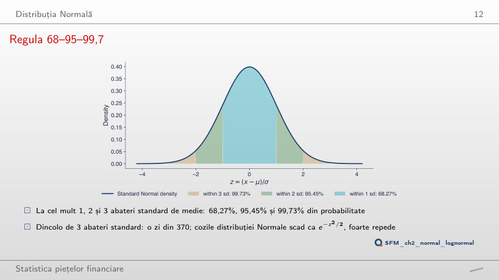
Răspuns
De circa 43 de ori. P(|Z| > 4) = 0,0063%, adică o zi din 15 787, aproximativ 63 de ani de tranzacționare cu 252 de zile pe an; P(|Z| > 3) = 0,27%, o zi din 370. Raportul densităților în 3 și 4, φ(3)/φ(4) = 33, nu este raportul probabilităților din coadă. La 6 abateri standard, distribuția Normală dă o zi din 507 milioane.
Frecvența variațiilor mari în cazul distribuției Normale
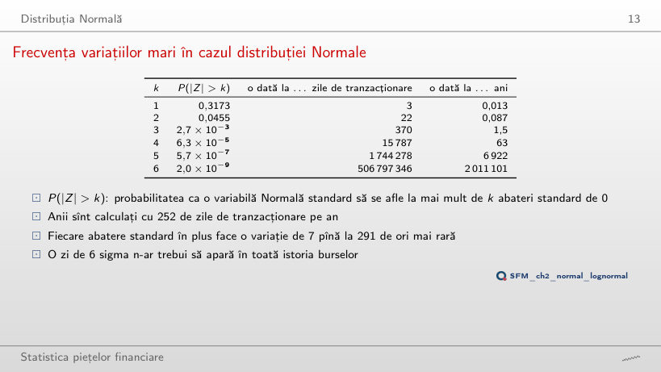
Distribuția Normală: P(|Z| > k) și cît de des apare o astfel de zi; zilele observate ale seriei alese
Ponderea zilelor aflate la cel mult k abateri standard de medie (regula 68–95–99,7)
Răspuns
79,1%, mai mult decît după distribuția Normală. Cîteva zile extreme măresc abaterea standard, iar majoritatea zilelor sînt mici în raport cu ea: centrul distribuției este mai înalt. La cel mult două abateri standard ponderea este 95,3%, aproape de 95,45%; dincolo de trei abateri standard sînt 62 de zile în loc de 11,3. Pentru cele opt serii, ponderea la cel mult o abatere standard este între 75,7% (BRD) și 81,4% (BET).
Exemplu lucrat: pierderile mari ale S&P 500
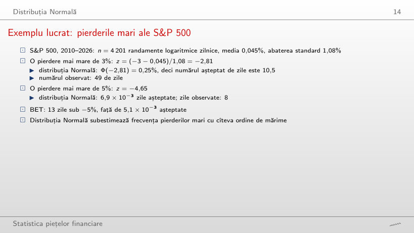
Zile cu randamentul logaritmic sub −x%: observate și așteptate după distribuția Normală
Exemplu lucrat: pierderi mai mari decît x%
Răspuns
Mai puține: 512 zile, față de 813 așteptate. Abaterea standard a Bitcoin este 3,49%, deci −3% se află la numai 0,89 abateri standard sub medie, între centru și coadă, unde randamentele cu cozi groase au mai puține zile decît distribuția Normală. Cozile groase apar la praguri de mai multe abateri standard: sub −10% (2,90 abateri standard), Bitcoin are 56 de zile, față de 8,1 așteptate. Un prag exprimat în % compară seriile numai dacă volatilitățile lor sînt apropiate.
Distribuția lognormală
Densități lognormale (SFElognormal)
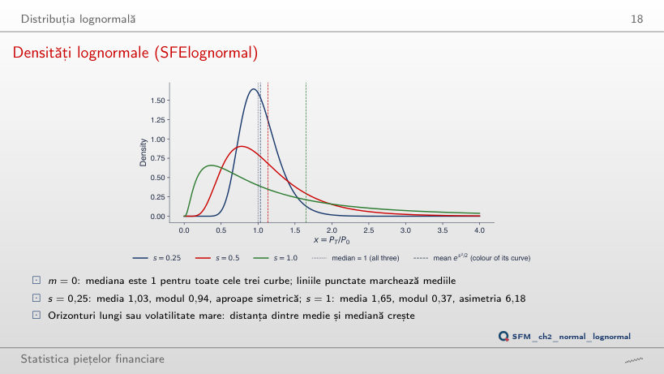
Răspuns
Mediana rămîne 1, deoarece em nu depinde de s. Media es²/2 crește pînă la 3,08, iar modul e−s² scade pînă la 0,105. La s = 1, media este 1,65, modul 0,37 și asimetria 6,18. Distanța dintre medie și mediană crește cu volatilitatea și cu orizontul, prin s = σ√T.
Exemplu lucrat: 100 de lei în BET
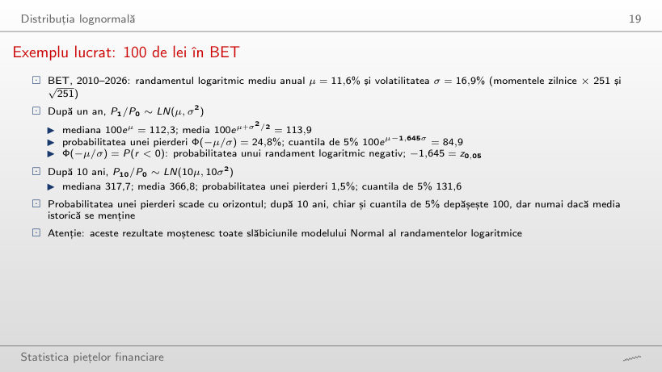
Valoarea a 100 de lei investiți, PT/P0 ~ LN(Tμ, Tσ²)
Exemplu lucrat: valoarea a 100 de lei după T ani
Răspuns
0,11%: Φ(−μ√T/σ) = Φ(−0,682 × √20) = Φ(−3,05). Media randamentului logaritmic crește cu T, iar abaterea lui standard cu √T, deci raportul μ√T/σ crește cu √T. Mediana devine 1 009,6, iar media 1 345,6: distanța dintre ele crește cu orizontul. Calculul presupune că media randamentului logaritmic din 2010–2026, 11,6% pe an, se menține și că randamentele logaritmice sînt Normale și independente; pentru S&P 500, același calcul dă 0,15%, pentru Bitcoin 0,19%.
Teorema limită centrală
CLT în practică (SFEclt)
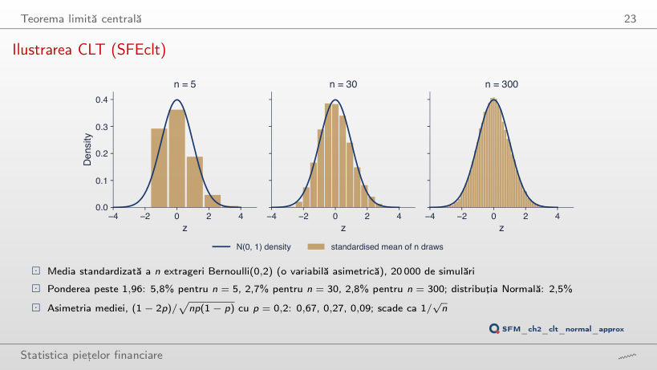
Exemplu lucrat: distribuția binomială exactă a mediei
Răspuns
Nu. Asimetria mediei este (1 − 2p)/√(np(1 − p)) = 0,96/√5,88 = 0,40 pentru n = 300 și p = 0,02, mai mare decît 0,27 pentru n = 30 și p = 0,2. Asimetria scade ca 1/√n, dar pornește de la un nivel care depinde de p: cu cît p este mai departe de 0,5, cu atît trebuie mai multe extrageri. Pagina calculează distribuția exactă a mediei; ponderea peste 1,96 pentru p = 0,2 este 5,8%, 2,6% și 2,8% (n = 5, 30, 300), iar în cele 20 000 de simulări ale slide-ului 5,8%, 2,7% și 2,8%.
Aproximarea Normală a distribuției binomiale (SFENormalApprox)
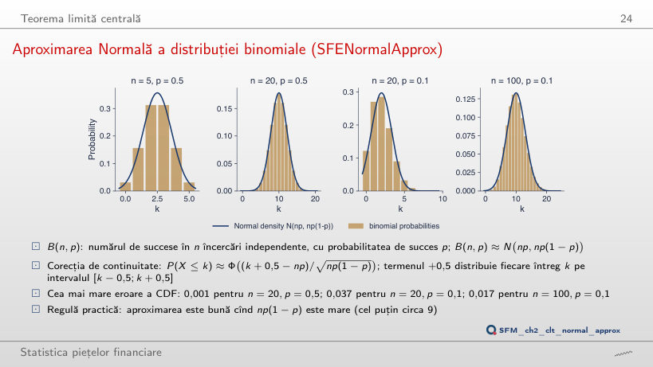
Răspuns
Nu. Cu corecția de continuitate, eroarea maximă a CDF este 0,037 la n = 20, 0,017 la n = 100 și 0,012 la n = 200. Regula np(1 − p) ≥ 9 indică de unde aproximarea devine utilizabilă, nu o precizie garantată; eroarea scade lent, aproximativ ca 1/√n, cu mici oscilații de la un n la altul. Fără corecția de continuitate, eroarea la n = 20 este 0,177.
Momentele și forma unei distribuții
Asimetria și boltirea în grafice
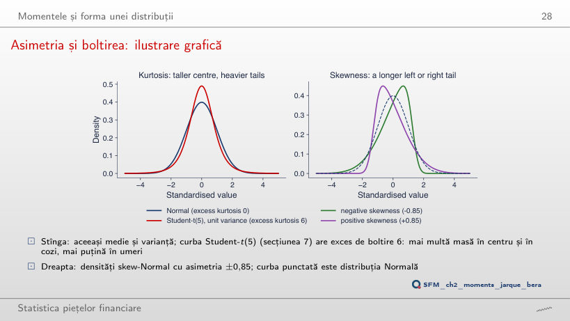
Răspuns
0,99. Asimetria familiei skew-Normal crește cu α, dar are o limită de circa 0,995: la α = 10 este 0,96, la α = 20 este 0,99. O asimetrie mai mare nu se poate obține cu această familie. Excesul de boltire al distribuției Student-t cu varianța 1 este 6/(ν − 4): 6 pentru ν = 5, 1 pentru ν = 10.
Randamente logaritmice zilnice: momente, 2010–2026
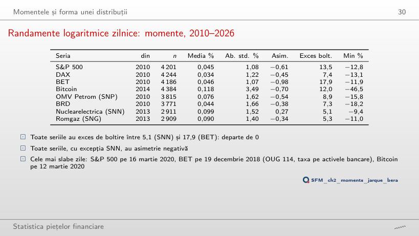
Randamente logaritmice zilnice (%): momente
Exemplu lucrat: asimetria și excesul de boltire din randamentele reale
Răspuns
Rămîne 18,0 (17,9 pe tot eșantionul). Cea mai slabă zi a BET, −11,9% pe 19 decembrie 2018 (OUG 114, taxa pe activele bancare), se află în afara acestei perioade. Boltirea de selecție depinde de cele cîteva zile extreme ale fiecărei serii, iar acestea diferă de la o piață la alta. Fără această perioadă, Bitcoin scade de la 12,0 la 5,4, iar DAX de la 7,4 la 3,1.
Randamentele DAX față de densitatea Normală (SFEDaxReturnDistribution)
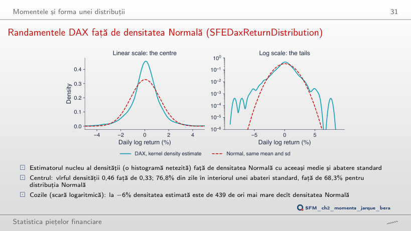
Răspuns
Crește la circa 580; la un sfert din lățimea Scott ajunge la 1 100, iar la dublu este 522. În coadă sînt puține observații, iar estimarea densității acolo depinde de lățimea de bandă. Pentru orice lățime încercată, raportul rămîne de ordinul sutelor: concluzia că DAX are cozi mult mai groase decît distribuția Normală nu depinde de această alegere. Vîrful densității estimate scade de la 0,47 la 0,34 cînd lățimea crește de la 0,5 la 3 ori regula Scott.
Testarea normalității: Jarque–Bera și QQ plots
Exemplu lucrat: Jarque–Bera pentru S&P 500
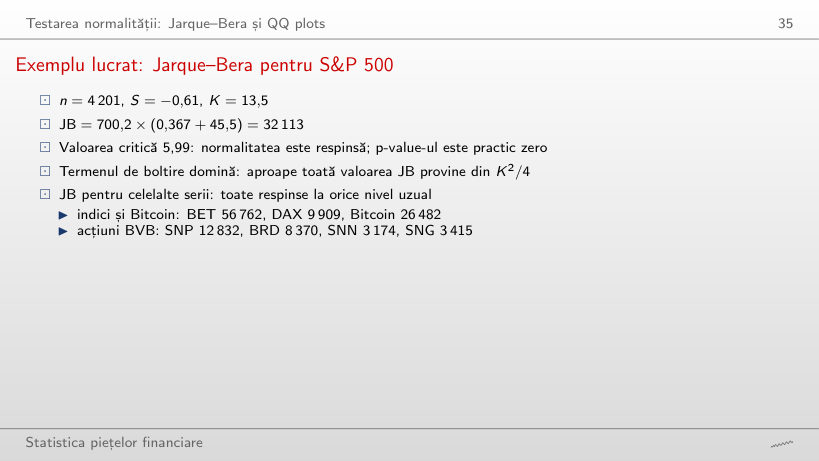
Testul Jarque–Bera, randamente logaritmice zilnice
Exemplu lucrat: statistica Jarque–Bera pas cu pas
Răspuns
Da. Din 2024, cea mai mică valoare JB este 33, la SNP (n = 632, S = −0,03, K = 1,1), peste valoarea critică 5,99; S&P 500 are încă 6 318, cu K = 14,9, din zilele din aprilie 2025. Cu cîteva sute de observații, un exces de boltire de circa 1 dă deja o valoare JB mult peste 5,99. Pe 2010–2026, JB este între 3 174 (SNN) și 56 762 (BET).
QQ plots față de distribuția Normală
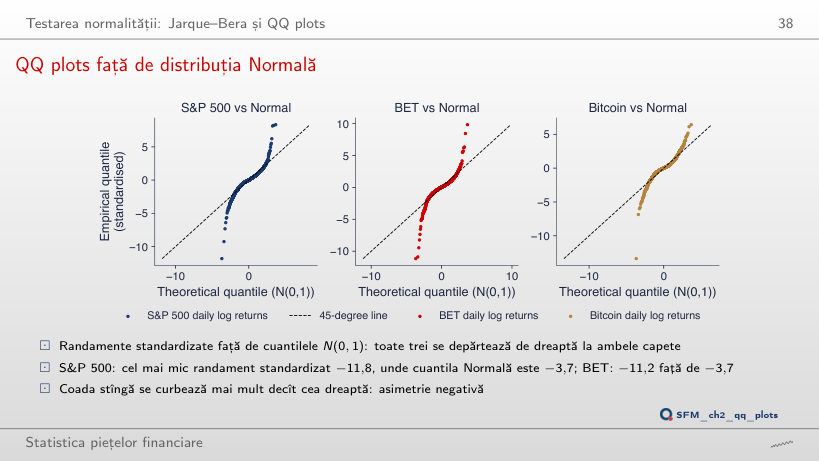
Răspuns
Da. De la începutul lui 2021, cel mai mic randament al S&P 500 este −6,2%, pe 4 aprilie 2025: −6,0 abateri standard, față de cuantila Normală −3,4. Pe tot eșantionul, ziua de 16 martie 2020 dă −11,8 față de −3,7. Martie 2020 mărește abaterea, dar nu o produce: și BET (−6,1) și Bitcoin (−5,8) rămîn departe de dreaptă după 2021.
Distribuția Student-t
Densități Student-t cu varianța 1
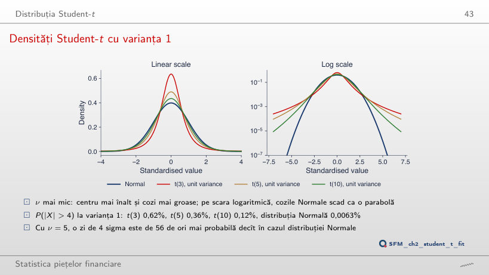
Răspuns
Crește: 2 316 la 5 abateri standard și circa 290 000 la 6. Coada distribuției Student-t scade ca o putere, |x|−ν, iar coada Normală ca e−x²/2, deci raportul crește fără limită. La 6 abateri standard, P(|X| > 6) este 0,057% pentru t(5) și 0,0000002% pentru distribuția Normală.
Distribuția Student-t estimată: gradele de libertate, 2010–2026
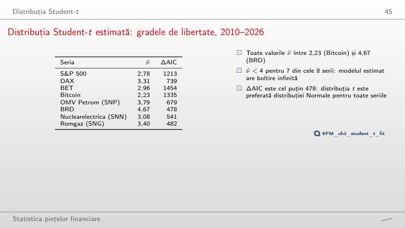
Distribuția Student-t estimată prin verosimilitate maximă
Exemplu lucrat: varianța ν/(ν − 2) și probabilitatea din coadă a distribuției t estimate
Răspuns
Pentru 3: BET (3,76), Bitcoin (2,69) și SNN (3,03). S&P 500 trece de la 2,78 la 4,05, BRD de la 4,67 la 6,26. Fără 2020 cozile sînt mai subțiri, dar toate valorile ν̂ rămîn între 2,7 și 6,3, departe de distribuția Normală (ν → ∞), iar ΔAIC rămîne în favoarea distribuției t pentru fiecare serie (cel puțin 66, la SNP). ν̂ este o estimație care depinde de eșantion, mai ales de cele cîteva zile extreme pe care le conține.
S&P 500: distribuția Normală și distribuția Student-t estimate
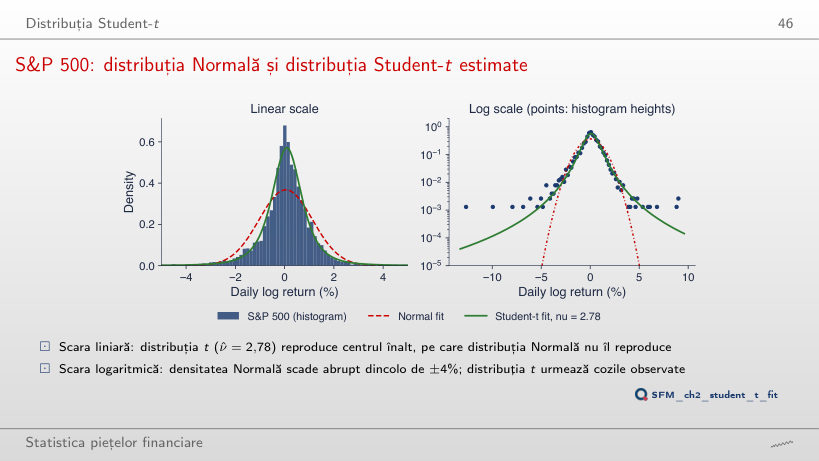
Răspuns
ν = 2,2: log-verosimilitatea este −5 704,8, față de −5 714,6 la ν = 4. Maximul, −5 693,8, este la estimația ν̂ = 2,78, iar profilul nu este simetric în jurul ei: scade încet spre ν mic și mai repede spre ν mare. La ν = 30 log-verosimilitatea este −6 054,5, spre −6 301,2, valoarea distribuției Normale. Diferența de AIC dintre distribuția Normală și distribuția t este 12 606,4 − 11 393,6 = 1 212,8 în favoarea distribuției t.
QQ plots față de distribuția Student-t estimată
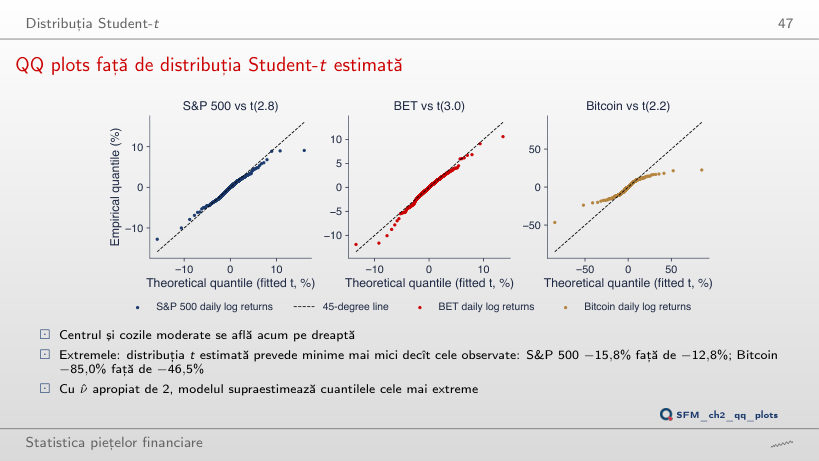
Răspuns
Între ν = 3 și ν = 4. Cu locația și scala reestimate, minimul prevăzut este −13,6% la ν = 3 și −8,7% la ν = 4, față de −12,8% observat. Un ν mai mare înseamnă cozi mai subțiri. La ν = 4, centrul se potrivește la fel de bine, dar extremele observate ies din nou sub dreaptă; nicio valoare unică a lui ν nu potrivește simultan centrul și extremele.
Faptele stilizate ale randamentelor
Faptul 1: cozile groase în cifre
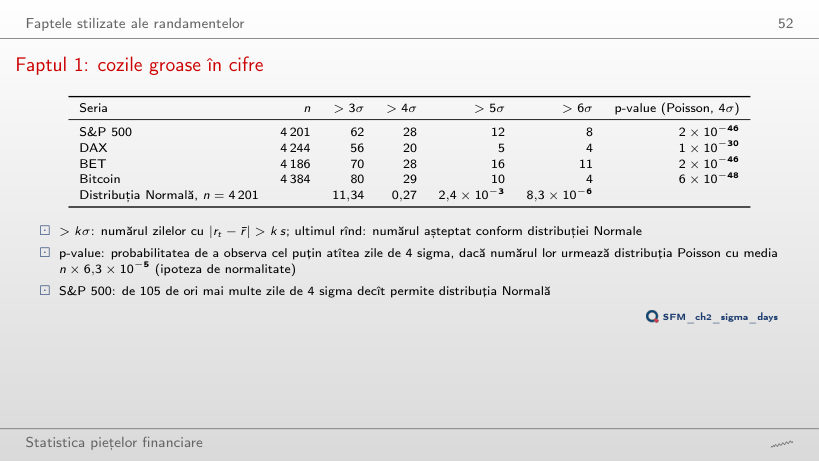
Zile cu |rt − r̄| > k s
Exemplu lucrat: P(|Z| > k), numărul așteptat de zile și p-value Poisson
Răspuns
Mai mare: 1 × 10⁻²⁵. La 3σ se observă mai multe zile, dar raportul față de numărul așteptat este 5,5 în loc de 105, iar p-value depinde de cît de departe este numărul observat de λ, în raport cu dispersia distribuției Poisson. Ambele valori sînt mult sub orice prag uzual. La 5σ și 6σ, p-value pentru S&P 500 este 8 × 10⁻⁴¹ și 6 × 10⁻⁴⁶.
Faptul 1: zile de 4 sigma pe toate piețele
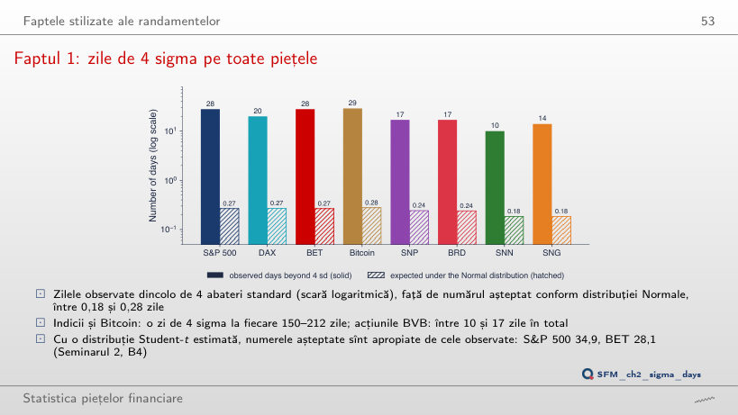
Răspuns
8 zile, față de 0,0000083 așteptate (o zi din 507 milioane). BET are 11, DAX 4, Bitcoin 4. Raportul dintre zilele observate și cele așteptate crește cu pragul: 5,5 la 3 abateri standard, 105 la 4, circa un milion la 6.
Faptul 2: gaussianitatea agregată
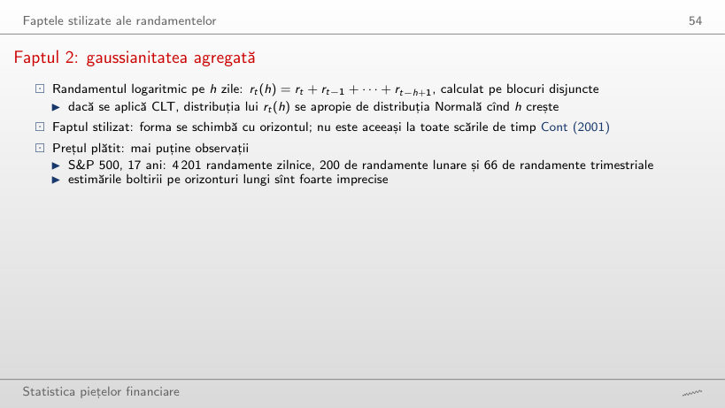
Randamente logaritmice pe h zile, blocuri disjuncte, din 2010
Răspuns
Pentru 2: S&P 500 (p-value 0,00004) și DAX (0,002). Pentru celelalte șase, p-value este între 0,07 (BET) și 0,71 (SNG). La h = 21, testul respinge încă pentru 7 serii, toate în afară de BRD (0,16). Nerespingerea nu arată că randamentele trimestriale sînt Normale: cu mai puțin de 70 de observații, testul are putere mică.
Faptul 2: boltirea scade cu orizontul
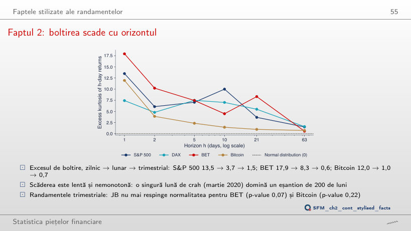
Răspuns
Circa 5,4. Excesul de boltire lunar (h = 21) scade de la 3,7 la 0,8. Momentul de ordinul 4 depinde mult de cîteva valori extreme: 50 de zile, 1,2% din eșantion, explică mai mult de jumătate din excesul de boltire zilnic. Nici fără ele randamentele zilnice nu sînt Normale: 5,4 este mult peste 0.
Faptul 2: S&P 500, QQ plots pentru randamentele zilnice și lunare
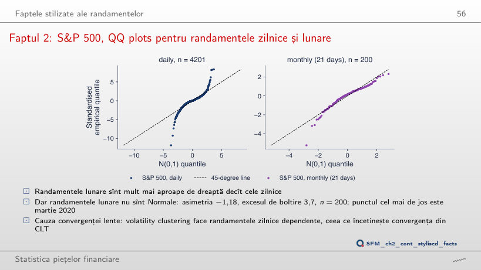
Răspuns
Da: p-value 0,00004, cu asimetria −1,13 și excesul de boltire 1,5. Pentru BET (p-value 0,07) și Bitcoin (0,22), testul nu mai respinge la acest orizont. Nerespingerea nu arată că randamentele trimestriale sînt Normale: cu 66 de observații, testul are putere mică.
Faptele 3 și 4: ACF a randamentelor și a randamentelor absolute
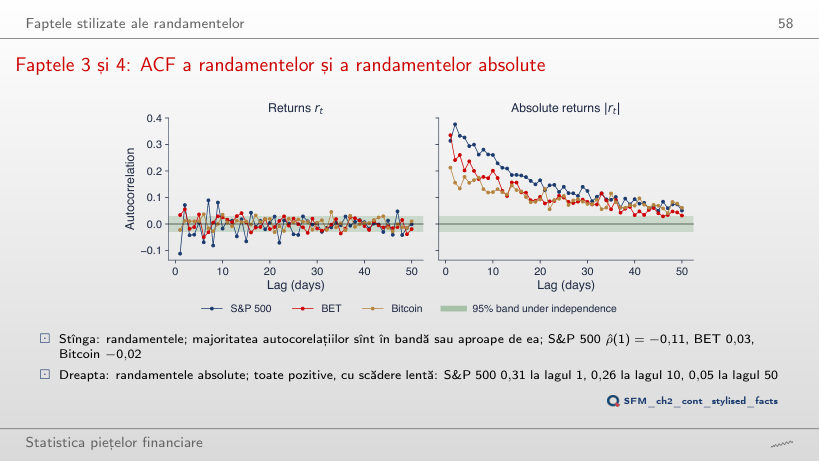
Răspuns
−0,04, aproape de marginea benzii ±0,03. Cea mai mare parte a valorii −0,11 vine din martie 2020, cînd scăderile mari și revenirile au alternat. Autocorelațiile randamentelor absolute rămîn mari și fără această perioadă. Puterea δ arată același lucru pentru |rt|δ: la S&P 500, autocorelația la lagul 10 este 0,20 pentru δ = 0,5, 0,26 pentru δ = 1 și 0,22 pentru δ = 2.
Faptul 3: autocorelație mică, dar nu întotdeauna nulă
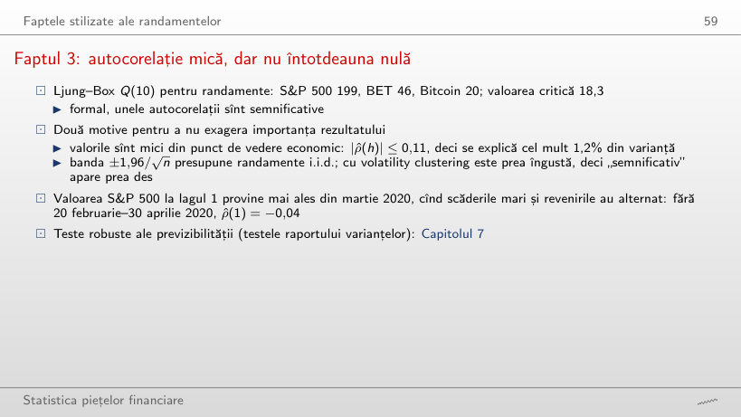
Testul Ljung–Box pentru randamente și pentru randamentele absolute
Răspuns
Pentru 6: Bitcoin (p-value 0,053) și BRD (0,059) nu mai resping. La S&P 500, Q(10) scade de la 199 la 32. Distribuția χ² a statisticii Q presupune randamente i.i.d.; cu volatility clustering testul respinge prea des, deci „semnificativ” este aici o concluzie slabă. Pentru randamentele absolute, Q(10) rămîne între 325 și 1 712 la toate seriile.
Faptul 4: perioade calme și perioade agitate
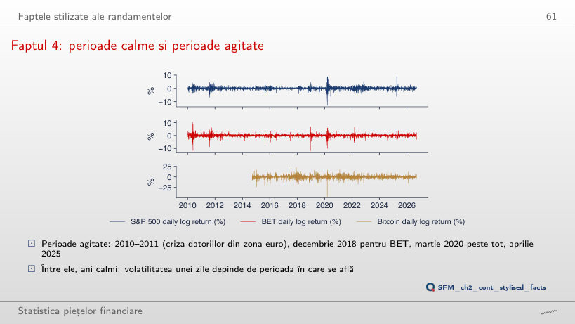
Răspuns
De circa 12 ori: 3,94% pe zi în fereastra care se termină pe 20 mai 2020, față de 0,32% în fereastra care se termină pe 13 decembrie 2017. Raportul varianțelor este circa 154. La BET raportul abaterilor standard este 8,2, la Bitcoin 8,3. Volatilitatea unei zile depinde de perioada în care se află.
Faptul 5: corelațiile de levier
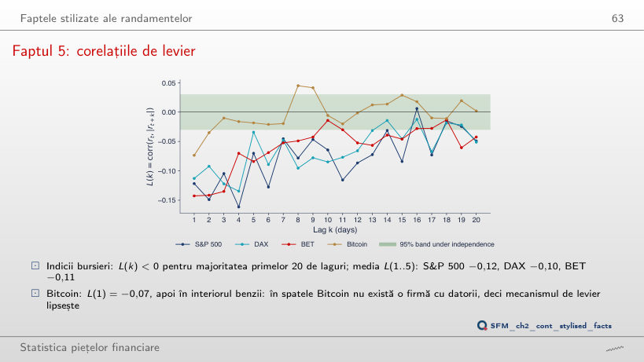
Răspuns
Da. De la începutul lui 2021, media L(1..5) a S&P 500 este −0,10 (−0,12 pe tot eșantionul), iar banda este ±0,05. Efectul de levier nu vine dintr-o singură criză: fără 20 februarie–30 aprilie 2020, media pe tot eșantionul este −0,11. La Bitcoin, media rămîne aproape de zero în toate variantele.
Faptul 6: asimetria cîștig/pierdere
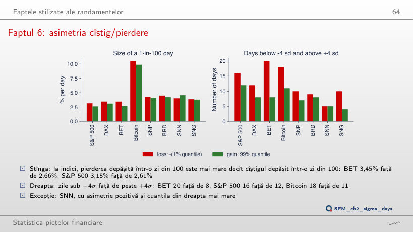
Răspuns
Nu. La 5%, S&P 500 (1,65% față de 1,54%) și DAX (1,94% față de 1,82%) au încă pierderea mai mare, dar la BET (1,48% față de 1,52%) și Bitcoin (5,33% față de 5,35%) cîștigul este puțin mai mare. Asimetria cîștig/pierdere se vede în coada îndepărtată; la α = 0,1%, pierderea este mai mare la toți patru (S&P 500 6,14% față de 6,01%).
Șase fapte, opt serii
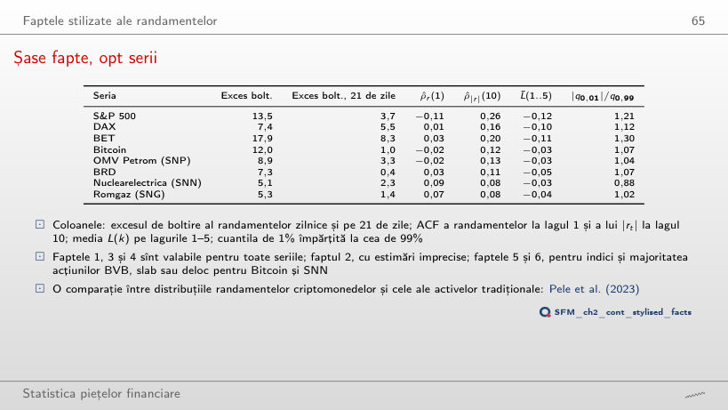
Statistica fiecărui fapt stilizat
Răspuns
Pentru SNP (−0,031, față de −0,032) și SNN (−0,025, față de −0,036). Bitcoin (−0,031, față de −0,030) și SNG (−0,039, față de −0,036) îl îndeplinesc la limită: cele patru valori, între −0,025 și −0,039, sînt toate aproape de prag, deci faptul 5 este la fel de slab pentru Bitcoin, SNP, SNN și SNG, în timp ce S&P 500, DAX și BET au între −0,10 și −0,12, iar BRD −0,05. Faptul 6 nu este îndeplinit doar la SNN, care are asimetrie pozitivă (0,27) și |q0,01|/q0,99 = 0,88; SNP (1,04) și SNG (1,02) sînt aproape de 1.
Randamente logaritmice zilnice, în %, din 2010 (Bitcoin din septembrie 2014, SNN și SNG din noiembrie 2013) pînă la 18 septembrie 2026. Prețuri EODHD: indicii și Bitcoin la închidere, acțiunile BVB ajustate pentru dividende și operațiuni corporative.